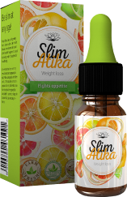

Prueba:
¿cómo perder sobrepeso?
Pase nuestra prueba y descubra cómo perder peso de manera fácil y permanente, sin interrupciones ni daños a la salud.
PASAR PRUEBAVamos a ver que te muestra la báscula.
CONTINUAR¿Hace dietas a menudo?
CONTINUAR¿Cómo te va con los deportes?
CONTINUAR¿Cuándo fue la última vez que estuvo en el gimnasio?
CONTINUAR¿Qué comes para la cena?
CONTINUAR¿Cuántas fotos en trajes de baño hay en tu Instagram?
CONTINUARUnos amigos te están invitando a un restaurante por la noche, ¿Que harás?
CONTINUAR¿Qué harás si necesitas perder peso con urgencia?
CONTINUARGotas para adelgazar Slimatika

Para adelgazar le ayudarán gotas Slimatika, son naturales y tienen un efecto complejo en el cuerpo. Además de su propósito directo: quemar grasa, los componentes constituyentes contribuyen a la normalización de la digestión, aceleran procesos de descomposición de los alimentos y también contribuyen a la eliminación de toxinas del cuerpo.
Su 50% de descuento es válido hasta el final del día
49€
98€